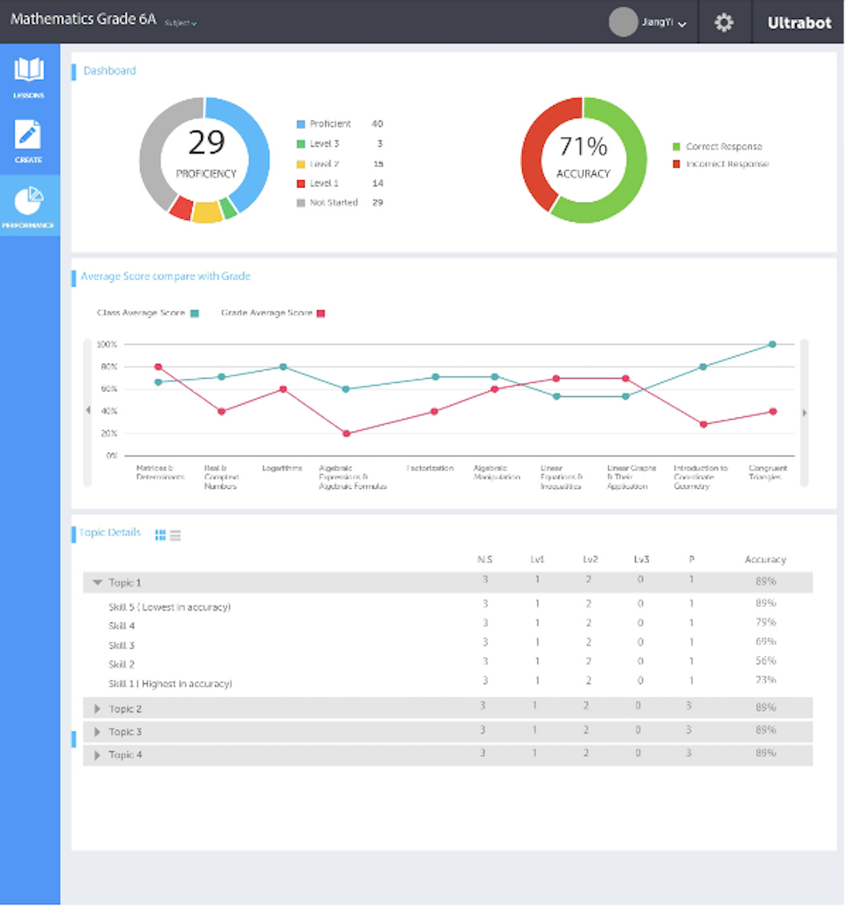

Learning management system

Objective
This case study is about a E-learning platform that aimed to help low cost private schools in Pakistan to help students and teachers improve how they manage their academic duties..
How did I do it
Here is the design process along with the deliverables given at each milestone.
Research and analysis
I started off with by making a research plan to clarify what the research focus will be and which other factors will be involved. To start my comprehension of the context of learning management system, I used G2Crowd and GetApp. I read online reviews and comparisons of different learning management systems present. I got to learn about standards such as SCORM (Shareable Content Object Reference Model) which is a standard for e-learning products.
On G2Crowd, I was able to read the reviews and compare the learning management systems. It gave me an idea on what are the painpoints of some of the users. These comparison and reviews helped me with one aspect of the picture.
Qualitative research and workshops
Conversation with students and teachers
After having a look at the how the learning management systems work, what the features are, what works and doesn’t work for users.
Our team planned visits to schools for interview sessions with the children and teachers. It was more of an informal sessions with the students and teachers because we wanted them to be as candid as they can be.
This was a three week activity. By the end of this, we had visited 10 schools, had sessions with 30 – 40 students and 20 staff members.
The content of the conversation with teachers was focused on:
1. Challenges in delivery of lectures to students in remote areas.
2. How can digital content help teachers to re-design their teaching strategy.
3. What are some strategies that they use while teaching.
The content of the conversation with students was focused on:
1. Their use of computer in general and their proficiency.
2. Have they ever used online system to help with their curriculum.
3. Their thoughts on taking online quizzes as compared to giving assessments.
A large amount of information was collected and it was overwhemling for all of us to make sense of the data. I created basic personas of the user roles invovled i.e. student,teacher and administration. Due to cultural constraints, it wasn’t feasible to put their actual pictures in the personas so we settled down with illustrations. Few student personas are shown above and I cant find the rest of the artefacts :)
Internal workshops
After collecting and analysing all the information obtained from the interviews and focus groups, the next step was to define user problems and turn them to opportunities. Since other stake holders were involved in the process, best possible solutions for the problems were formulated for each role in the hierarchy. This marked our MVP. Table of tasks were listed down, major and minor tasks were identified and then prioritised keeping in mind the need of the users and technological constraints.
User flow and information architecture
After identifying top tasks based on each role, I began ideating ideass and screens to have clarity around the user flows. At this time the information architecture was not defined.
Challenge: We took on three main roles in parallel in order to keep things agile. This made it difficult to define the user flows.
Based on the few ideations, high level user flow was defined for basic stories such as password reset, creation of user, self sign up etc. .
Now that the flows were high level defined, I moved on creating a basic information architecture. This step gave me the clarity on how to approach different user stories.
Wireframe & prototype
Balsamiq and UX Pin were used to create hi-fi and low fidelity wireframes. Sketching activities were held, and dot voting was done in some scenarios. Once the wire-framing was done for different roles, different versions of the websites were sketched. I've put my version here (which was not used). Along with the website wireframe, you can see the glimpse of the hi-fi prototype for the mobile app and desktop app. To introduce this product in different schools, a digital challenge by the name of Learn Smart Pakistan was launched. It's aim was to ease the product in the market and allow students to prepare for their final exams . It had all the relevant digitised content for their curriculum.

Usability testing and refinement
High fidelity prototypes were then tested out amongst small groups of students in our office. These sessions were moderated and task oriented. Students were given some guided tasks and were observed. Every student was accompanied with our team member. Their task was to observe, answer any questions, record the task completion and comprehension of content. The result of these sessions were interesting as there was confusion around the flow, the content and new concepts like taxonomies, masteries, quizez, etc. Students were interested in figuring out how they were being graded and how will they be able to beat their friends in online competitions.
Design handover
After the usability tests were carried out, the inputs were incorporated in the final designs. I created the final designs and the handover was done to the developers. It was a continous collaborative process amongst myself, developers and business analysts.
Apologies for the image resolution as it was one of the initial projects for which I dont have the high res images :)
Challenges and measure of success
This was my first project as a user experience designer. Every method was new to me, but this project will always be the one which is somewhat close to my heart. Now that I look back at it, there were alot of things I could have done differently.
Challenges
- Time constraint: as every user role had its own interface, it got confusing about how they co-relate with each other.- While conducting research, it was very hard for students to open up. It took us multiple sessions and multiple rounds in making them feel comfortable.
- Few of the teachers had no interest in introducing technology to their classrooms as they thought of this as a threat to their jobs. It took us a while to introduce the concept of blended learning and how this will act as an ally to them rather than a threat.
Measure of sucess
The stakeholders were part of the education sector, including the federal government, the development sector, schools, teachers, students, and parents. Even after the handover was done, I was actively involved in the developing the user interface and training programs with teachers and students. This product hit the market by the name of Learn Smart Pakistan and which was made accessable to 1000 public and private schools in 123 cities of Pakistan. This initiative reached more than 10,000 users across Pakistan and has now reached up to 300,000 users across Pakistan.